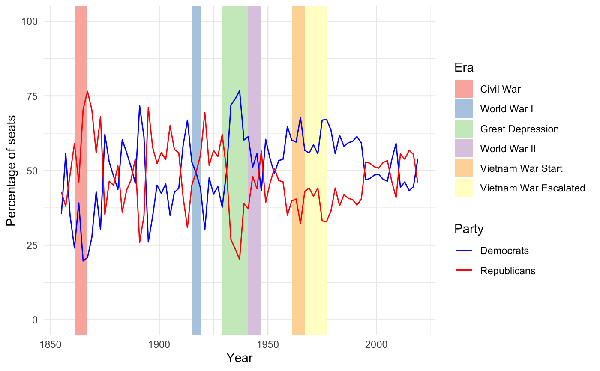

The make-up of the United States House of Representatives every two years since 1789. The last Congress included is the 112th Congress, which completed its term in 2013.
house
A data frame with 112 observations on the following 12 variables.
The number of that year's Congress
Starting year
Ending year
Total number of seats
Name of the first political party
Number of seats held by the first political party
Name of the second political party
Number of seats held by the second political party
Other
Vacancy
Delegate
Resident commissioner
Party Divisions of the House of Representatives, 1789 to Present. https://history.house.gov/Institution/Party-Divisions/Party-Divisions.
library(dplyr) library(ggplot2) library(forcats) # Examine two-party relationship since 1855 house_since_1855 <- house %>% filter(year_start >= 1855) %>% mutate( p1_perc = 100 * np1 / seats, p2_perc = 100 * np2 / seats, era = case_when( between(year_start, 1861, 1865) ~ "Civil War", between(year_start, 1914, 1918) ~ "World War I", between(year_start, 1929, 1939) ~ "Great Depression", between(year_start, 1940, 1945) ~ "World War II", between(year_start, 1960, 1965) ~ "Vietnam War Start", between(year_start, 1965, 1975) ~ "Vietnam War Escalated", TRUE ~ NA_character_ ), era = fct_relevel(era, "Civil War", "World War I", "Great Depression", "World War II", "Vietnam War Start", "Vietnam War Escalated") ) ggplot(house_since_1855, aes(x = year_start)) + geom_rect(aes(xmin = year_start, xmax = lead(year_start), ymin = -Inf, ymax = Inf, fill = era)) + geom_line(aes(y = p1_perc, color = "Democrats")) + # Democrats geom_line(aes(y = p2_perc, color = "Republicans")) + # Republicans scale_fill_brewer(palette = "Pastel1", na.translate = FALSE) + scale_color_manual( name = "Party", values = c("Democrats" = "blue", "Republicans" = "red"), labels = c("Democrats", "Republicans") ) + theme_minimal() + ylim(0, 100) + labs(x = "Year", y = "Percentage of seats", fill = "Era")#> Warning: Removed 1 rows containing missing values (geom_rect).